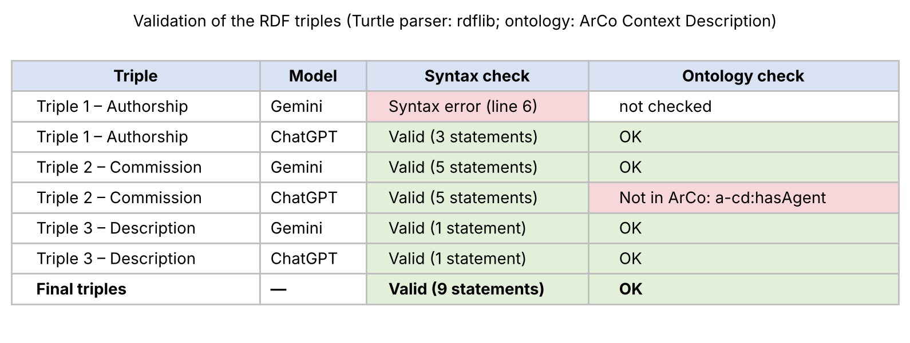

Filling the Gaps: RDF Triples
The last step was to translate the verified information into RDF triples that could be added to ArCo. I created three triples, one for each gap identified with SPARQL:
- Authorship: the Tempio linked to its architect, Leon Battista Alberti (a-cd:hasAuthor);
- Commission: the Tempio linked to its commission by Sigismondo Pandolfo Malatesta (a-cd:hasCommission);
- Description: a historical and artistic description of the Tempio (rdfs:comment).
The first two triples link the monument to other resources through IRIs, while the third adds a text (a literal). In this way the enrichment covers both kinds of object an RDF triple can have.
I submitted the same three prompts, in the same order, to ChatGPT and Gemini, each in a new chat. The first prompt is zero-shot; the second and third are few-shot, and each example is the correct result of the previous step. The triples are written in Turtle, a plain-text format for RDF.
How the triples were checked
- Syntax: every answer was parsed with rdflib, a Python library for RDF. If the parser can read the code and build the graph, the syntax is correct.
- Ontology: every property and class used by the models was checked against the official file of ArCo's Context Description ontology, to make sure it exists and is used with the right subject and object.
- Content: the facts were compared with the description of the Tempio published by the Municipality of Rimini.
The table summarises the results of the syntax and ontology checks for all the answers and for the final triples, which are discussed in detail below.

The parser counts RDF statements: besides the three main triples, the final file also declares the type and the label of the new resources (the architect, the patron and the commission), for a total of nine statements.
Triple 1 – Authorship (zero-shot)
Prompt:
Agisci come uno specialista di Web Semantico ed ontologie ArCo.
Trasforma la seguente frase in triple RDF in formato Turtle:
"L'autore del Tempio Malatestiano è Leon Battista Alberti."
- IRI del Tempio Malatestiano: <https://w3id.org/arco/resource/ArchitecturalOrLandscapeHeritage/0800163046>
- Usa la proprietà a-cd:hasAuthor
- Crea un IRI esplicito per Leon Battista Alberti (non un nodo anonimo), di tipo l0:Agent, con rdfs:label in italiano
- Dichiara i prefissi necessariTranslation: "Act as a Semantic Web and ArCo ontology specialist. Turn the following sentence into RDF triples in Turtle format: 'The author of the Tempio Malatestiano is Leon Battista Alberti.' Use the IRI of the Tempio, the property a-cd:hasAuthor, and create an explicit IRI for Leon Battista Alberti (not a blank node), of type l0:Agent, with an Italian rdfs:label. Declare the necessary prefixes."
Gemini
@prefix a-cd: <https://w3id.org/arco/ontology/context-description/> .
@prefix l0: <https://w3id.org/italia/onto/l0/> .
@prefix rdfs: <http://www.w3.org/2000/01/rdf-schema#> .
@prefix arco-res: <https://w3id.org/arco/resource/> .
<https://w3id.org/arco/resource/ArchitecturalOrLandscapeHeritage/0800163046>
a-cd:hasAuthor arco-res:Agent/leon-battista-alberti .
arco-res:Agent/leon-battista-alberti
a l0:Agent ;
rdfs:label "Leon Battista Alberti"@it .ChatGPT
@prefix a-cd: <https://w3id.org/arco/ontology/context-description/> .
@prefix l0: <https://w3id.org/italia/onto/l0/> .
@prefix rdfs: <http://www.w3.org/2000/01/rdf-schema#> .
<https://w3id.org/arco/resource/ArchitecturalOrLandscapeHeritage/0800163046>
a-cd:hasAuthor <https://w3id.org/people/LeonBattistaAlberti> .
<https://w3id.org/people/LeonBattistaAlberti>
a l0:Agent ;
rdfs:label "Leon Battista Alberti"@it .Considerations
- Gemini's code contains a syntax error. To shorten the IRI of the architect it declared the prefix arco-res: and wrote arco-res:Agent/leon-battista-alberti. In Turtle a slash (/) is not allowed in the local part of a prefixed name without escaping it, so the validator stopped at that line and the code could not be read. The rest of the modelling (property, class, label) was correct, and the IRI followed ArCo's naming pattern (…/resource/Agent/…).
- ChatGPT's code is syntactically valid, but it placed the architect in an invented namespace (https://w3id.org/people/) unrelated to ArCo. ChatGPT pointed this out itself, noting that the IRI was created for the example and is not an official ArCo identifier.
- Neither answer could be used as it was. For the final triple I kept Gemini's IRI, which follows ArCo's pattern, and wrote it in full between angle brackets, which removes the syntax error.
Triple 2 – Commission (few-shot)
In ArCo a commission is not a direct link between a work and a person: it is an intermediate node of type a-cd:Commission, connected to the cultural property and to the patron. In the prompt I described this pattern but did not name the property linking the commission to the patron, to see whether the models knew the ontology.
Prompt:
Agisci come uno specialista di Web Semantico ed ontologie ArCo.
ESEMPIO:
@prefix a-cd: <https://w3id.org/arco/ontology/context-description/> .
@prefix rdfs: <http://www.w3.org/2000/01/rdf-schema#> .
@prefix l0: <https://w3id.org/italia/onto/l0/> .
<https://w3id.org/arco/resource/ArchitecturalOrLandscapeHeritage/0800163046>
a-cd:hasAuthor <https://w3id.org/arco/resource/Agent/leon-battista-alberti> .
<https://w3id.org/arco/resource/Agent/leon-battista-alberti>
a l0:Agent ;
rdfs:label "Leon Battista Alberti"@it .
TASK:
Basandoti sull'esempio, trasforma la seguente frase in triple RDF in formato Turtle:
"Il Tempio Malatestiano è stato commissionato da Sigismondo Pandolfo Malatesta."
- Usa la proprietà a-cd:hasCommission
- Segui il modello dell'ontologia ArCo, in cui la committenza è rappresentata da un nodo intermedio di tipo a-cd:Commission collegato al committente
- Crea IRI espliciti per la committenza e per Sigismondo Pandolfo Malatesta (l0:Agent, con rdfs:label in italiano)Translation of the task: "Based on the example, turn the following sentence into RDF triples in Turtle format: 'The Tempio Malatestiano was commissioned by Sigismondo Pandolfo Malatesta.' Use the property a-cd:hasCommission; follow the ArCo model, in which the commission is an intermediate node of type a-cd:Commission linked to the patron; create explicit IRIs for the commission and for Sigismondo Pandolfo Malatesta (l0:Agent, with an Italian rdfs:label)."
Gemini
<https://w3id.org/arco/resource/ArchitecturalOrLandscapeHeritage/0800163046>
a-cd:hasCommission <https://w3id.org/arco/resource/Commission/0800163046-commission-1> .
<https://w3id.org/arco/resource/Commission/0800163046-commission-1>
a a-cd:Commission ;
a-cd:hasCommittent <https://w3id.org/arco/resource/Agent/sigismondo-pandolfo-malatesta> .
<https://w3id.org/arco/resource/Agent/sigismondo-pandolfo-malatesta>
a l0:Agent ;
rdfs:label "Sigismondo Pandolfo Malatesta"@it .ChatGPT
<https://w3id.org/arco/resource/ArchitecturalOrLandscapeHeritage/0800163046>
a-cd:hasCommission <https://w3id.org/arco/resource/Commission/commission-sigismondo-pandolfo-malatesta> .
<https://w3id.org/arco/resource/Commission/commission-sigismondo-pandolfo-malatesta>
a a-cd:Commission ;
a-cd:hasAgent <https://w3id.org/arco/resource/Agent/sigismondo-pandolfo-malatesta> .
<https://w3id.org/arco/resource/Agent/sigismondo-pandolfo-malatesta>
a l0:Agent ;
rdfs:label "Sigismondo Pandolfo Malatesta"@it .(Prefix declarations omitted: they are the same as in the example.)
Considerations
- Both answers are syntactically valid and both modelled the commission as an intermediate node, as requested.
- Gemini used a-cd:hasCommittent, the correct property: in ArCo's ontology it links a Commission to an l0:Agent, exactly as in Gemini's code. It also built the IRI of the commission from the catalogue code of the monument (0800163046-commission-1), following ArCo's naming pattern.
- ChatGPT used a-cd:hasAgent, which does not exist in the Context Description module. The code is valid Turtle, but the triple uses a property that ArCo does not define: a syntax validator cannot detect this kind of error, which only emerged from checking the ontology.
- In an earlier test with a different prompt, Gemini had linked Sigismondo directly to the Tempio through a-cd:isCommissionedBy, another property that does not exist in ArCo. Describing the intermediate node in the prompt was therefore decisive for obtaining a correct model.
Triple 3 – Description (few-shot)
For the description I gave the models the two previous triples as examples and listed only the facts confirmed by the Municipality of Rimini, so that the text would not include unverified information.
Prompt:
Agisci come uno specialista di Web Semantico ed ontologie ArCo.
ESEMPIO 1 (autore):
<https://w3id.org/arco/resource/ArchitecturalOrLandscapeHeritage/0800163046>
a-cd:hasAuthor <https://w3id.org/arco/resource/Agent/leon-battista-alberti> .
ESEMPIO 2 (committenza):
<https://w3id.org/arco/resource/ArchitecturalOrLandscapeHeritage/0800163046>
a-cd:hasCommission <https://w3id.org/arco/resource/Commission/0800163046-commission-1> .
<https://w3id.org/arco/resource/Commission/0800163046-commission-1>
a a-cd:Commission ;
a-cd:hasCommittent <https://w3id.org/arco/resource/Agent/sigismondo-pandolfo-malatesta> .
TASK:
Basandoti sugli esempi, crea una tripla RDF in formato Turtle che aggiunga al Tempio Malatestiano una descrizione storico-artistica, usando la proprietà rdfs:comment con un testo in italiano (@it) di 2-3 frasi.
La descrizione deve contenere SOLO queste informazioni:
- progettato da Leon Battista Alberti, che si ispirò all'Arco d'Augusto e al Ponte di Tiberio
- commissionato da Sigismondo Pandolfo Malatesta come monumento alla propria famiglia
- lavori iniziati nel 1447 e rimasti incompiuti alla morte di Sigismondo nel 1468
- decorazioni di Agostino di Duccio e Matteo de' Pasti, Crocifisso di Giotto, affresco di Piero della Francesca
Dichiara i prefissi necessari.Translation of the task: "Based on the examples, create an RDF triple in Turtle format that adds a historical and artistic description to the Tempio Malatestiano, using rdfs:comment with an Italian text (@it) of 2–3 sentences. The description must contain ONLY this information: designed by Leon Battista Alberti, inspired by the Arch of Augustus and the Bridge of Tiberius; commissioned by Sigismondo Pandolfo Malatesta as a monument to his family; works begun in 1447 and still unfinished at Sigismondo's death in 1468; decorations by Agostino di Duccio and Matteo de' Pasti, Crucifix by Giotto, fresco by Piero della Francesca. Declare the necessary prefixes."
Gemini
@prefix rdfs: <http://www.w3.org/2000/01/rdf-schema#> .
<https://w3id.org/arco/resource/ArchitecturalOrLandscapeHeritage/0800163046>
rdfs:comment "Commissionato da Sigismondo Pandolfo Malatesta come monumento alla propria famiglia, il Tempio Malatestiano fu progettato da Leon Battista Alberti, che si ispirò all'Arco d'Augusto e al Ponte di Tiberio. I lavori iniziarono nel 1447 e rimasero incompiuti alla morte di Sigismondo nel 1468. L'edificio custodisce le decorazioni di Agostino di Duccio e Matteo de' Pasti, il Crocifisso di Giotto e un affresco di Piero della Francesca."@it .ChatGPT
@prefix rdfs: <http://www.w3.org/2000/01/rdf-schema#> .
<https://w3id.org/arco/resource/ArchitecturalOrLandscapeHeritage/0800163046>
rdfs:comment "Il Tempio Malatestiano fu progettato da Leon Battista Alberti, che si ispirò all'Arco d'Augusto e al Ponte di Tiberio, e commissionato da Sigismondo Pandolfo Malatesta come monumento alla propria famiglia. I lavori iniziarono nel 1447 e rimasero incompiuti alla morte di Sigismondo nel 1468. Le decorazioni furono realizzate da Agostino di Duccio e Matteo de' Pasti; l'edificio custodisce inoltre un Crocifisso di Giotto e un affresco di Piero della Francesca."@it .Considerations
- Both answers are syntactically valid, declare only the prefix they need (rdfs:) and respect all the constraints: three sentences, Italian language tag, and only the facts listed in the prompt, with nothing added.
- The two texts differ only in the order of the information: Gemini opens with the commission, while ChatGPT follows the order of the list in the prompt. For the final triple I chose ChatGPT's version, which opens with the subject of the sentence, the Tempio, and reads more naturally as a catalogue description.
- With a precise list of facts, the task became a controlled rewriting, and both models performed equally well.
Results
| Triple | Gemini | ChatGPT |
|---|---|---|
| 1. Authorship (zero-shot) | ❌ Syntax error (slash in a prefixed name); IRI consistent with ArCo | ✅ Valid syntax; ⚠️ invented namespace outside ArCo |
| 2. Commission (few-shot) | ✅ Valid syntax; ✅ correct ArCo property (a-cd:hasCommittent) | ✅ Valid syntax; ❌ non-existent property (a-cd:hasAgent) |
| 3. Description (few-shot) | ✅ Valid; all constraints respected | ✅ Valid; all constraints respected |
Gemini showed a better knowledge of ArCo's ontology and naming conventions, but made a syntax error in the only zero-shot prompt. ChatGPT always produced valid Turtle and was transparent about the limits of its choices, but it used a property that does not exist in ArCo. The few-shot examples improved the results of both models: after seeing a correct triple, neither repeated a syntax error.
The most important lesson is that syntax and meaning must be checked separately. A validator confirms that the code can be read, but only a comparison with the ontology shows whether the properties exist and are used correctly.
The final triples
Combining the correct parts of the two models' answers, I obtained the final enrichment for the Tempio Malatestiano. The code passed the syntax check, and all its properties and classes are defined in ArCo.
@prefix a-cd: <https://w3id.org/arco/ontology/context-description/> .
@prefix l0: <https://w3id.org/italia/onto/l0/> .
@prefix rdfs: <http://www.w3.org/2000/01/rdf-schema#> .
# Triple 1 – Authorship
<https://w3id.org/arco/resource/ArchitecturalOrLandscapeHeritage/0800163046>
a-cd:hasAuthor <https://w3id.org/arco/resource/Agent/leon-battista-alberti> .
<https://w3id.org/arco/resource/Agent/leon-battista-alberti>
a l0:Agent ;
rdfs:label "Leon Battista Alberti"@it .
# Triple 2 – Commission
<https://w3id.org/arco/resource/ArchitecturalOrLandscapeHeritage/0800163046>
a-cd:hasCommission <https://w3id.org/arco/resource/Commission/0800163046-commission-1> .
<https://w3id.org/arco/resource/Commission/0800163046-commission-1>
a a-cd:Commission ;
a-cd:hasCommittent <https://w3id.org/arco/resource/Agent/sigismondo-pandolfo-malatesta> .
<https://w3id.org/arco/resource/Agent/sigismondo-pandolfo-malatesta>
a l0:Agent ;
rdfs:label "Sigismondo Pandolfo Malatesta"@it .
# Triple 3 – Description
<https://w3id.org/arco/resource/ArchitecturalOrLandscapeHeritage/0800163046>
rdfs:comment "Il Tempio Malatestiano fu progettato da Leon Battista Alberti, che si ispirò all'Arco d'Augusto e al Ponte di Tiberio, e commissionato da Sigismondo Pandolfo Malatesta come monumento alla propria famiglia. I lavori iniziarono nel 1447 e rimasero incompiuti alla morte di Sigismondo nel 1468. Le decorazioni furono realizzate da Agostino di Duccio e Matteo de' Pasti; l'edificio custodisce inoltre un Crocifisso di Giotto e un affresco di Piero della Francesca."@it .Translation of the description: "The Tempio Malatestiano was designed by Leon Battista Alberti, who was inspired by the Arch of Augustus and the Bridge of Tiberius, and commissioned by Sigismondo Pandolfo Malatesta as a monument to his family. The works began in 1447 and were still unfinished at Sigismondo's death in 1468. The decorations were made by Agostino di Duccio and Matteo de' Pasti; the building also houses a Crucifix by Giotto and a fresco by Piero della Francesca."
The final triples can be downloaded as a Turtle file: Tempio_Malatestiano_enrichment.ttl.
Summary
| Subject | Predicate | Object |
|---|---|---|
| Tempio Malatestiano (0800163046) | a-cd:hasAuthor | Leon Battista Alberti (IRI, l0:Agent) |
| Tempio Malatestiano (0800163046) | a-cd:hasCommission | Commission 0800163046-commission-1 (IRI, a-cd:Commission) |
| Commission 0800163046-commission-1 | a-cd:hasCommittent | Sigismondo Pandolfo Malatesta (IRI, l0:Agent) |
| Tempio Malatestiano (0800163046) | rdfs:comment | Historical and artistic description (literal, @it) |
Since I cannot write directly into ArCo's official database, which is managed by the Ministry of Culture, the triples are published as a Turtle file. Loaded together with ArCo's data, they add the missing links and description to the record of the Tempio Malatestiano, because they use the monument's official IRI and ArCo's own properties.